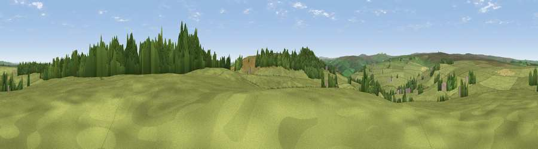

Viewpoint near Low Laithe
#22690 in England · top 46% of its area beats it · near Low LaitheThe view, rendered

A 360° render of this exact spot computed from the terrain model, tree cover and land cover — summer colours, afternoon light, calibrated against photographs of famous viewpoints. Real trees, hedges and buildings will differ in detail.
The panorama
Grey silhouette: terrain skyline in each direction (720 bearings, Earth curvature and refraction included). Dashed green: skyline with trees (+15 m) and buildings (+8 m) as obstacles. Blue strip: how far the ground is visible on each bearing.
Where the view opens
Wedge length = distance to the farthest visible ground on that bearing (vegetation-aware). Rings at 10, 25 and 50 km.
What fills the view
80% grassland · 15% woodland · 5% cropland ·
Angular shares of the visible panorama (visual magnitude), not map area. Landscape diversity 0.28 (0–1 Shannon).
Key numbers
More beautiful places nearby
The staircase of upgrades: each row has a higher view potential than everything closer. Driving times are estimates from straight-line distance, calibrated against real road routing — check an actual route before setting out.
| Place | Direction | Drive | Score |
|---|---|---|---|
| Viewpoint near Low Laithe | S · 1 km | ~3 min | 66.1 |
| High Crag Ridge | SW · 6 km | ~12 min | 67.6 |
| How Hill | E · 6 km | ~14 min | 72.9 |
| Viewpoint near Bewerley | WSW · 9 km | ~17 min | 76.8 |
| Viewpoint near East Witton | NNW · 20 km | ~34 min | 77.8 |
| Viewpoint near Kirby Knowle | NE · 32 km | ~50 min | 80.5 |
| Viewpoint near Thirlby | ENE · 34 km | ~52 min | 81.5 |
| Beacon Hill | NE · 42 km | ~61 min | 84.7 |
54.09105, -1.67852 · source: screening · position refined by local search. Computed location — check access rights before visiting.